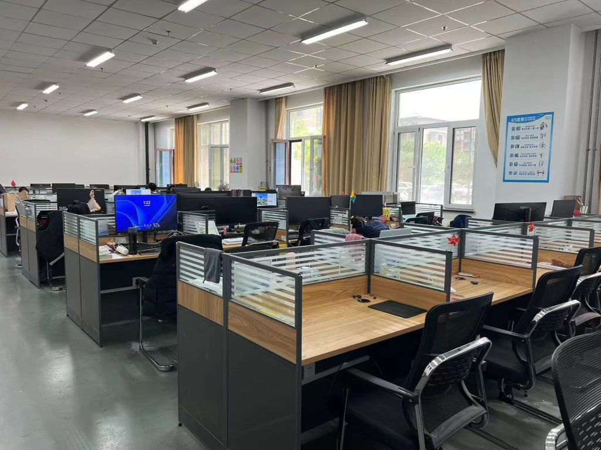

欢迎来到软件学院实验室的官方网站！
软件学院实验室于2018年建设完成，总面积约1900平米，位于明向校区行勉楼一层和软件学院一层，包含了本科实验室、研究生实验室和创新实验室。
本科实验室总面积约1200平米，包含4个实验室（A1，C1，C2，C3）和1个服务器机房，每个实验室有130台云终端，总共可同时容纳520人上机实验。实验室部署方式架构采用了先进的桌面云解决方案，设备包括了14台高性能服务器、520台云终端，及其他多媒体控制、无线网络等设备。可以开展课程实验、课程设计、毕业设计、线上教学、创新实践课程等教学过程。
本科实验室环境

软件学院研究生实验室总面积约300平米，共2个实验室，位于明向校区行勉楼一层和软件学院一层，可容纳110名研究生。实验室拥有3台科研服务器和多台网络设备，为每一个研究生配备学习工位和书柜，每个工位配备有线网络接口和电源插座。实验室环境良好，学习氛围浓厚。
研究生实验室环境
软件学院创新实验室总面积约400平米，位于明向校区行勉楼一层A2实验室和B2实验室，实验室现有软件开发、信息安全、人工智能、虚拟现实4个技术小组和大创项目组。各小组负责所在方向的学习计划制定与执行、并为学院科技活动、学科竞赛和创新创业活动提供人员组织、协调、技术保障等。其中VR联合实验室属于校企联合共建实验室，拥有高空独木桥、虚拟驾驶、虚拟自行车赛道等多套虚拟现实（Virtual Reality，VR）开发和验证设备，2018年获批“山西省虚拟现实技术研究生教育创新中心”。创新实验室服务于本学院教师教学科研同时，还承担着本科实践教学基地的任务。
创新实验室部分设备展示
我们专注于人工智能、大数据分析和软件工程前沿研究。主要研究方向包括机器学习算法优化、分布式系统架构设计和智能人机交互技术。
查看研究详情 →近年取得多项重要科研成果。
查看完整成果列表 →拥有三只及以上的前沿科研团队
了解团队成员 →